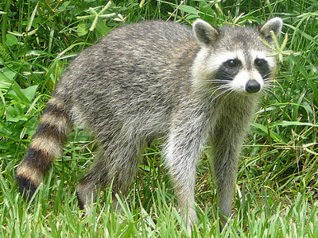

Mea Culpa
C'est ma faute
C'est ma faute
C'est ma très grande faute d'orthographe
Voilà comment j'écris
Giraffe
Inventaire
Une pierre
Deux maisons
Trois ruines
Quatre fossoyeurs
Un jardin
Des fleurs
Et un raton laveur
…

Les paris stupides
Un certain Blaise Pascal
etc…
À la pêche à la baleine
À la pêche à la baleine, à la pêche à la baleine,
Disait le père d’une voix courroucée
À son fils Prosper, sous l’armoire allongé,
À la pêche à la baleine, à la pêche à la baleine,
Tu ne veux pas aller,
Et pourquoi donc?
Et pourquoi donc que j’irais pêcher une bête
Qui ne m’a rien fait, papa,
Un nouveau paragraphe
Devant un manque cruel d'inspiration, ce sont les seuls mots qui me passent par la tête.
Et puisqu'il en faut encore on peut toujours en rajouter.
ALICANTE
Une orange sur la table
Ta robe sur le tapis
Et toi dans mon lit
Doux présent du présent
Fraîcheur de la nuit
Chaleur de ma vie.